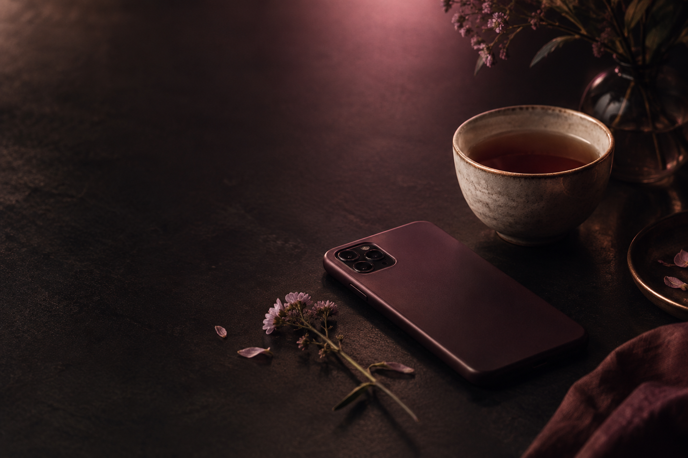

„Ne každý odchod je prohra. Někdy je to návrat k sobě.“
SÍLA MYŠLENKYPro chvíle, kdy potřebuješ slyšet pravdu
Některé rány
nejsou vidět.
A přesto bolí.
Prostor pro vztahy, rozchody, zklamání a nový začátek. Protože někdy stačí jedna věta, aby člověk věděl, že v tom není sám.
Bez přetvářky O vztazích i o tobě Nové texty každý den
Vítej na Síle myšlenky
Možná sem přicházíš s něčím, co se ti těžko říká nahlas.
Jsi tu správně. Tohle je klidný prostor pro vztahy, rozchody, nejistotu i chvíle, kdy se člověk znovu učí stát na vlastní straně.
Začni článkem, který je ti právě nejblíž. Nemusíš nic uspěchat ani mít všechno vyřešené. Stačí si dovolit udělat jeden malý krok směrem k sobě.
Dnešní myšlenky
„Nemusíš prosit o místo v životě člověka, který tě tam opravdu chce.“
SÍLA MYŠLENKY„Tvůj život neskončil tam, kde skončil jeden vztah.“
SÍLA MYŠLENKYČLÁNEK TÝDNE

PŮJDU DÁL · FÁZE 1
Když tě přepadne chuť napsat mu
Co udělat ve chvíli, kdy se ti po rozchodu chce znovu sáhnout po telefonu.
Přečíst článek →PROZKOUMEJ TÉMATA
Vyber si prostor, který je ti dnes nejblíž.
JAK TI JE DNES?
Nemusíš hledat správná slova. Vyber, co je ti nejblíž.
NAVÁŽI TAM, KDE JSI SKONČIL
Pokračovat ve čtení
Tvůj poslední otevřený článek tu na tebe počká.
Blog
Čtení pro dny,
kdy je toho moc.
Praktické, upřímné texty o vztazích, sebeúctě a cestě zpátky k sobě.
● Nový článek každý den v 9:00
PUSTIT A PŘIJMOUT KONEC · FÁZE 1
Když rozum ví, že to skončilo, ale tělo to ještě neví
Konec může přijmout hlava dřív než obyčejný den. Jak se neztratit v jeho tichých místech.
PŮJDU DÁL · FÁZE 1
Když tě přepadne chuť napsat mu
Co udělat ve chvíli, kdy se ti po rozchodu chce znovu sáhnout po telefonu.
PŮJDU DÁL · FÁZE 1
Když se rozhoduješ pustit člověka, kterého jsi měl rád
První krok nebývá odchod. Bývá to chvíle, kdy si dovolíš přestat bojovat s pravdou.
VZTAHY A ROZCHODY · FÁZE 1
Jak poznat, že už nebojuješ za vztah, ale jen za jeho vzpomínku
Pět signálů, že je čas přestat se vracet tam, kde už ti není dobře.
PŘIJETÍ · FÁZE 1
Když vztah skončí: co dělat s tichem, které zůstane
Ticho po konci není prázdno. Často je to první prostor, kde znovu uslyšíš sebe.
NÁVRAT K SOBĚ · FÁZE 1
První kroky zpět k sobě, když se ti nechce začínat znovu
Nemusíš mít nový životní plán. Pro začátek stačí jeden malý krok, který patří tobě.
O projektu
Slova někdy podrží, i když je kolem ticho.
„
Síla myšlenky vznikla pro chvíle, kdy člověk potřebuje na okamžik zpomalit a připomenout si, že jeho pocity mají své místo.
Nejsou tu dokonalé návody ani rychlé odpovědi. Jsou tu texty, otázky a malé kroky pro ty, kdo procházejí koncem vztahu, hledají pevnější půdu pod nohama nebo se znovu učí být na své straně.
Vyber si, co je ti právě blízké. A vrať se, kdykoli budeš potřebovat.
OBCHOD SÍLY MYŠLENKY
Něco pro chvíle, kdy se chceš vrátit k sobě.
Vybrané digitální materiály, které mohou provázet tvoje dny. Každý produkt objednáš bezpečně přímo u jeho autora.
Nejoblíbenější
Texty, ke kterým se stojí za to vracet.
Výběr článků, které otevírají to, co si lidé často nechávají pro sebe.